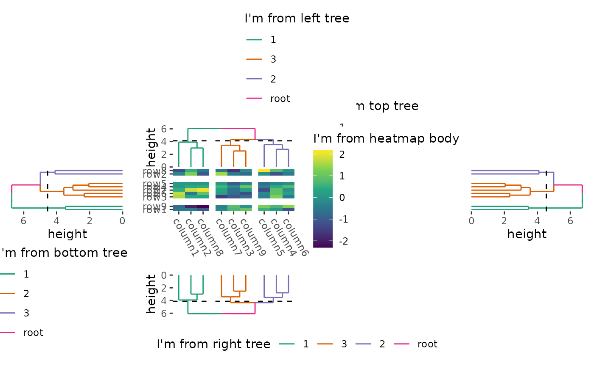
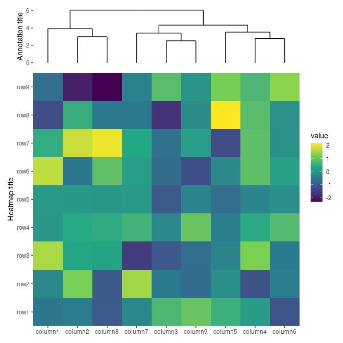
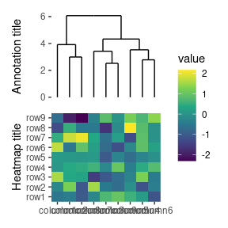
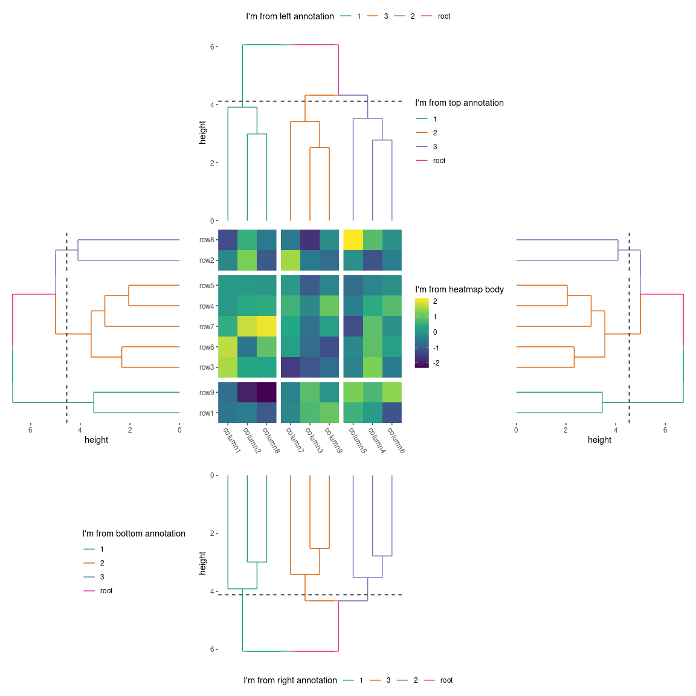
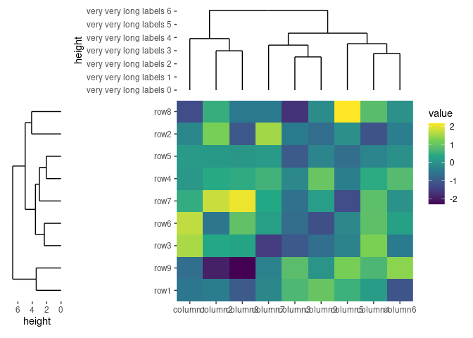
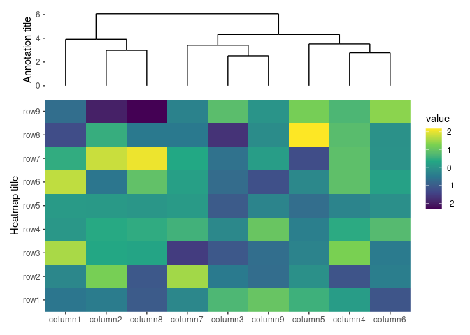

The heatmap_layout()/ggheatmap() function provides a powerful way to create
customizable heatmaps in R using ggplot2. This vignette will guide you through
its usage.
input data
The data input can be a numeric or character vector, a data frame, and any other data which can be converted into a matrix.
set.seed(123)
small_mat <- matrix(rnorm(81), nrow = 9)
rownames(small_mat) <- paste0("row", seq_len(nrow(small_mat)))
colnames(small_mat) <- paste0("column", seq_len(ncol(small_mat)))
heatmap body
For ggplot2 usage, the matrix input will be converted into a long formated
data frame when drawing. The default mapping will use aes(.data$.x, .data$.y),
but can be controlled using mapping argument. The data in the underlying
ggplot object contains following columns:
.xpaneland.ypanel: the column and row panel.xand.y: thexandycoordinates.row_namesand.column_names: A factor of the row and column names of the original matrix (only applicable when names exist)..row_indexand.column_index: the row and column index of the original matrix.value: the actual matrix value.
You can treat the heatmap_layout() object as a normal ggplot2 object with a
default mapping and data. You can add ggplot2 elements as usual.
ggheatmap(small_mat) + geom_point() + scale_fill_viridis_c()
By default, a heatmap layer is added. If you set filling = FALSE, a blank
heatmap will be drawn, allowing for customized filling geoms. For larger
matrices, you may want to use a raster layer for faster rendering. In such
cases, packages like ggrastr or
ggfx are helpful.
Additionally, ggfx
offers many image filters that can be applied to ggplot2 layers.
ggheatmap(small_mat, filling = FALSE) +
ggrastr::rasterise(geom_tile(aes(fill = value)), dev = "ragg")
Indeed, we have add ggrastr::rasterise() method for both ggheatmap() and
ggstack() objects, you can directly call ggrastr::rasterise() which will
rasterise all plots in the layout.

heatmap annotations
A heatmap typically has two observation axes, you can reorder the observations,
or provide additional information for them. An annotation is a stack_layout()
object internally, capable of holding multiple plots, and can be placed at the
top, left, bottom, or right.
Note that ggalign use the concept of "number of observations" in the
vctrs package or NROW()
function. When aligning the observations, you must ensure the number of
observations is equal. For column annotations, the layout data will be
transposed before use. This is necessary because column annotations use heatmap
columns as observations, but we need rows.
By default, heatmap_layout()/ggheatmap() does not initialize an active
context, so all additions are placed within the heatmap body. we can use
hmanno() to set the active context, directing all subsequent additions to this
position. The active context allows for custom layout adjustments and the
addition of various plot types.
In the following example, align_kmeans() is used to group the columns into three
panels. It doesn’t matter if this is added to the top or bottom since it won’t
add a plot area:
ggheatmap(small_mat) +
hmanno("t") +
align_kmeans(3L)
We can add any align_*() function to the annotation. For more details on
align_*() functions, refer to vignette("layout-customize") and
vignette("layout-plot").
ggheatmap(small_mat) +
theme(axis.text.x = element_text(angle = -60, hjust = 0)) +
hmanno("r") +
align_dendro(k = 3L) +
geom_point(aes(color = factor(branch)))
In this example:
-
hmanno("r")change the active context to the right of the heatmap. -
align_dendro(k = 3L)adds a dendrogram to this right-side annotation context and sets itself as the active plot in the annotation stack. -
geom_point(aes(color = factor(branch)))is then added to this active plot within the annotation stack, here, it means thealign_dendro()plot.
plot size
heatmap body size
You can specify the relative sizes of the heatmap body using the .width and
.height arguments in the ggheatmap() function. The dot prefix helps avoid
conflicts with arguments from geom_tile().
ggheatmap(small_mat, .height = 2) +
scale_fill_viridis_c() +
hmanno("t") +
align_dendro()
Alternatively, the hmanno() function allows you to control the heatmap body
sizes when position is NULL.
ggheatmap(small_mat) +
hmanno(position = NULL, height = 2) +
scale_fill_viridis_c() +
hmanno("t") +
align_dendro()
heatmap annotation total size
The hmanno() function allows you to control the total annotation stack size
when position is a string. The size argument controls the relative width
(for left and right annotations) or height (for top and bottom annotations) of
the whole annotation stack.
ggheatmap(small_mat) +
scale_fill_viridis_c() +
hmanno("t", size = 1) +
align_dendro()
We can use unit() to define the size.
ggheatmap(small_mat) +
scale_fill_viridis_c() +
hmanno("t", size = unit(30, "mm")) +
align_dendro()
single annotation plot size
All align_*() functions that add plots in the annotation stack have a size
argument to control the relative width (for left and right annotations) or
height (for top and bottom annotations) of the single plot in the annotation
stack.
ggheatmap(small_mat) +
scale_fill_viridis_c() +
hmanno("l", size = 0.2) +
ggalign(data = rowSums, aes(x = value), size = unit(10, "mm")) +
geom_bar(
aes(y = .y, fill = factor(.y)),
stat = "identity",
orientation = "y"
) +
scale_fill_brewer(palette = "Set1", guide = "none")
guide legends
By default, ggheatmap() will collect all guide legends on the side from which
they originate.
heatmap_with_four_side_guides <- ggheatmap(small_mat) +
scale_fill_viridis_c(name = "I'm from heatmap body") +
theme(axis.text.x = element_text(angle = -60, hjust = 0)) +
hmanno("t") +
align_dendro(aes(color = branch), k = 3L) +
scale_color_brewer(
name = "I'm from top annotation", palette = "Dark2",
guide = guide_legend(position = "right")
) +
hmanno("l") +
align_dendro(aes(color = branch), k = 3L) +
scale_color_brewer(
name = "I'm from left annotation", palette = "Dark2",
guide = guide_legend(position = "top")
) +
hmanno("b") +
align_dendro(aes(color = branch), k = 3L) +
scale_color_brewer(
name = "I'm from bottom annotation", palette = "Dark2",
guide = guide_legend(position = "left")
) +
hmanno("r") +
align_dendro(aes(color = branch), k = 3L) +
scale_color_brewer(
name = "I'm from right annotation", palette = "Dark2",
guide = guide_legend(position = "bottom")
) &
theme(plot.margin = margin())
heatmap_with_four_side_guides
This package provides the guides and free_guides arguments for precise control
over guide legends.
Legend Position in Layout
The guides argument controls which positions of guide legends should be
collected in the layout. They will be collected to their original side.
heatmap layout
For a heatmap layout, it has five plots (heatmap body, four sides of the nested
heatmap annotation stack). When position is NULL, hmanno() set the guides
for the heatmap layout.
heatmap_with_four_side_guides +
# the heatmap layout only collect guide legends in the top and bottom
hmanno(guides = "tb")Figure 1: Heatmap collect top and bottom guides only
In this way, the guide legends in the left and right position won’t be collected.
heatmap annotation stack layout
In the nested layouts, the top-level layout won’t collect guide legends from plots within the nested layout unless the nested layout collects them first. Guide legends in the heatmap layout will only be collected from the annotation stack if the stack layout collects its own guide legends first.
When position is a string, hmanno() set the guides for the heatmap
annotation stack. By default, it’ll inherit from the parent layout (heatmap
layout)’s guides argument.
heatmap_with_four_side_guides +
# the left annotation won't collecte the guide legends
hmanno("l", guides = NULL)
Note: Guide legends in the heatmap layout will only be collected from the annotation stack if the stack layout collects its own guide legends first.
In this example, the guide legends from the left annotation won’t be collected by the heatmap layout since the left annotation doesn’t collect the guide legends.
Legend Position for a Single Plot
The free_guides argument allows you to override the guides argument for a
single plot.
heatmap body
When position is NULL, hmanno() set the free_guides for the heatmap
body.
heatmap_with_four_side_guides +
# the heatmap layout only collect guide legends in the top and bottom
hmanno(guides = "tb") +
# we override the layout `guides` argument and collect the right guide
# legend for the heatmap body
hmanno(free_guides = "r")
In this example, the heatmap body right side legend won’t be collected by
default in the layout. We use free_guides to override the guides argument
for the heatmap body plot.
heatmap annotation stack
In the heamtap layout, each annotation stack is a nested stack plot, we can also
use free_guides to override the guides argument in the heatmap layout for
the annotation stack in hmanno().
heatmap_with_four_side_guides +
# the heatmap layout only collect guide legends in the top and bottom
hmanno(guides = "tb") +
# we collect the right guide legend for the right annotation in the heatmap layout
hmanno("t", free_guides = "r") +
# we collect the left guide legend for the bottom annotation in the heatmap layout
hmanno("b", free_guides = "l")
single plot in the annotation stack
All align_*() functions which add plot include a free_guides argument to
override the guides setting for the plot in the annotation stack layout.
ggheatmap(small_mat) +
scale_fill_viridis_c() +
theme(axis.text.x = element_text(angle = -60, hjust = 0)) +
hmanno("t") +
# we won't collect any guide legends from the dendrogram plot
align_dendro(aes(color = branch), k = 3L, free_guides = NULL) +
align_dendro(aes(color = branch), k = 3L, free_guides = NULL) &
scale_color_brewer(
palette = "Dark2",
guide = guide_legend(position = "bottom")
)
free_spaces
By default, ggheatmap() will align all elements of the plot, which can
sometimes lead to unwanted spacing. Consider the following example:
ggheatmap(small_mat) +
scale_fill_viridis_c() +
hmanno("t", size = unit(30, "mm")) +
align_dendro() +
scale_y_continuous(
expand = expansion(),
labels = ~ paste("very very long labels", .x)
) +
hmanno("l", unit(20, "mm")) +
align_dendro()
Both free_spaces and free_labs operate on individual plots, while layout
values set global parameters for the entire layout. This means that align_*
functions will inherit these values, but you can override them within the
align_* functions.
If
positionisNULL: These arguments control the behavior of the heatmap body and set the global values for the heatmap layout. Setting towaiver()inherits from the parent layout.-
If
positionis a string: These arguments set the global values for the annotation stack layout. If set towaiver(), it inherits from specific heatmap layout axes:- For top and bottom annotations, it inherits from the left (“l”) and right (“r”) axes.
- For left and right annotations, it inherits from the top (“t”) and bottom (“b”) axes.
In this case, the left annotation stack is positioned far from the heatmap body
due to the wide axis labels in the top annotation stack. This occurs because the
top annotation stack is aligned with the heatmap body. To fix this, you can
remove the left borders around the panel of the top annotation stack by setting
free_spaces = "l".
ggheatmap(small_mat) +
scale_fill_viridis_c() +
hmanno("t", size = unit(30, "mm"), free_spaces = "l") +
align_dendro() +
scale_y_continuous(
expand = expansion(),
labels = ~ paste("very very long labels", .x)
) +
hmanno("l", unit(20, "mm")) +
align_dendro()
In the Figure 1 we can also use the free_spaces to
make a compact heatmap. Here, we remove the right border spaces of the top
annotation stack, and the left border spaces of the bottom annotation stack.
heatmap_with_four_side_guides +
hmanno(guides = "tb") + # we set the `guides` argument here
hmanno("t", free_spaces = "r") + # we remove the right border spaces
hmanno("b", free_spaces = "l") # we remove the left border spaces
align_*() functions include the free_spaces argument, which, by default,
inherits from the annotation stack. This allows you to control the alignment
for each plot individually.
ggheatmap(small_mat) +
scale_fill_viridis_c() +
hmanno("t", size = unit(30, "mm")) +
align_dendro(free_labs = "l") +
scale_y_continuous(
expand = expansion(),
labels = ~ paste("very very long labels", .x)
) +
hmanno("l", unit(20, "mm")) +
align_dendro()
free_labs
By default, ggheatmap() won’t align the axis titles.
ggheatmap(small_mat) +
scale_fill_viridis_c() +
ylab("Heatmap title") +
hmanno("t", size = unit(30, "mm")) +
align_dendro() +
ylab("Annotation title")
To align all axis titles, you can set free_labs = NULL in the hmanno()
function. Alternatively, A single string containing one or more of axis
positions (“t”, “l”, “b”, “r”) to indicate which axis titles should be free from
alignment.
ggheatmap(small_mat) +
hmanno(free_labs = NULL) +
scale_fill_viridis_c() +
ylab("Heatmap title") +
hmanno("t", size = unit(30, "mm")) +
align_dendro() +
ylab("Annotation title")The same with free_spaces argument, you can control the free_labs argument
for the individual plot in align_*() function.
Session information
sessionInfo()
#> R version 4.4.1 (2024-06-14)
#> Platform: x86_64-pc-linux-gnu
#> Running under: Ubuntu 22.04.5 LTS
#>
#> Matrix products: default
#> BLAS: /usr/lib/x86_64-linux-gnu/openblas-pthread/libblas.so.3
#> LAPACK: /usr/lib/x86_64-linux-gnu/openblas-pthread/libopenblasp-r0.3.20.so; LAPACK version 3.10.0
#>
#> locale:
#> [1] LC_CTYPE=C.UTF-8 LC_NUMERIC=C LC_TIME=C.UTF-8
#> [4] LC_COLLATE=C.UTF-8 LC_MONETARY=C.UTF-8 LC_MESSAGES=C.UTF-8
#> [7] LC_PAPER=C.UTF-8 LC_NAME=C LC_ADDRESS=C
#> [10] LC_TELEPHONE=C LC_MEASUREMENT=C.UTF-8 LC_IDENTIFICATION=C
#>
#> time zone: UTC
#> tzcode source: system (glibc)
#>
#> attached base packages:
#> [1] stats graphics grDevices utils datasets methods base
#>
#> other attached packages:
#> [1] ggalign_0.0.4.9000 ggplot2_3.5.1
#>
#> loaded via a namespace (and not attached):
#> [1] gtable_0.3.5 jsonlite_1.8.9 dplyr_1.1.4 compiler_4.4.1
#> [5] highr_0.11 tidyselect_1.2.1 ggbeeswarm_0.7.2 jquerylib_0.1.4
#> [9] systemfonts_1.1.0 scales_1.3.0 textshaping_0.4.0 yaml_2.3.10
#> [13] fastmap_1.2.0 R6_2.5.1 labeling_0.4.3 generics_0.1.3
#> [17] knitr_1.48 tibble_3.2.1 bookdown_0.40 munsell_0.5.1
#> [21] RColorBrewer_1.1-3 bslib_0.8.0 pillar_1.9.0 rlang_1.1.4
#> [25] utf8_1.2.4 cachem_1.1.0 xfun_0.48 sass_0.4.9
#> [29] viridisLite_0.4.2 cli_3.6.3 withr_3.0.1 magrittr_2.0.3
#> [33] digest_0.6.37 grid_4.4.1 beeswarm_0.4.0 lifecycle_1.0.4
#> [37] vipor_0.4.7 ggrastr_1.0.2 vctrs_0.6.5 evaluate_1.0.1
#> [41] glue_1.8.0 data.table_1.16.2 farver_2.1.2 ragg_1.3.3
#> [45] fansi_1.0.6 colorspace_2.1-1 rmarkdown_2.28 tools_4.4.1
#> [49] pkgconfig_2.0.3 htmltools_0.5.8.1